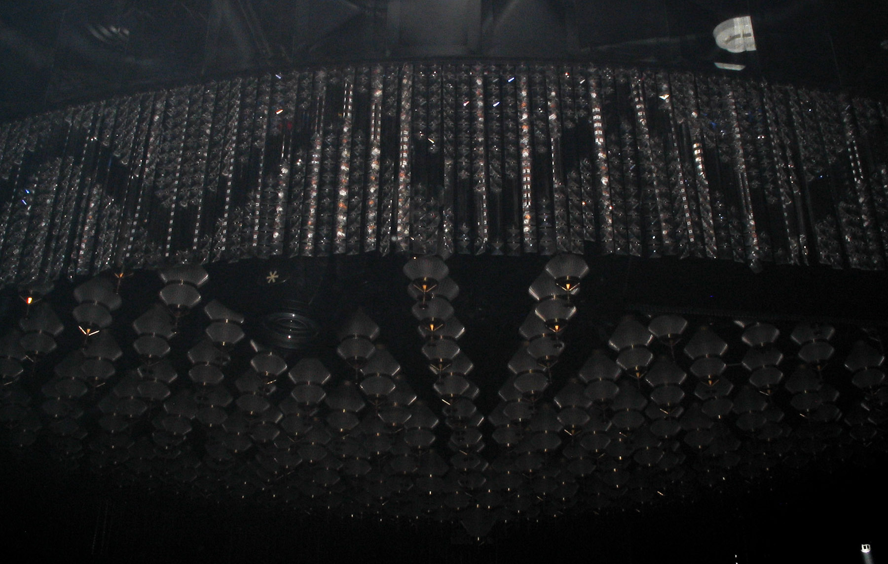
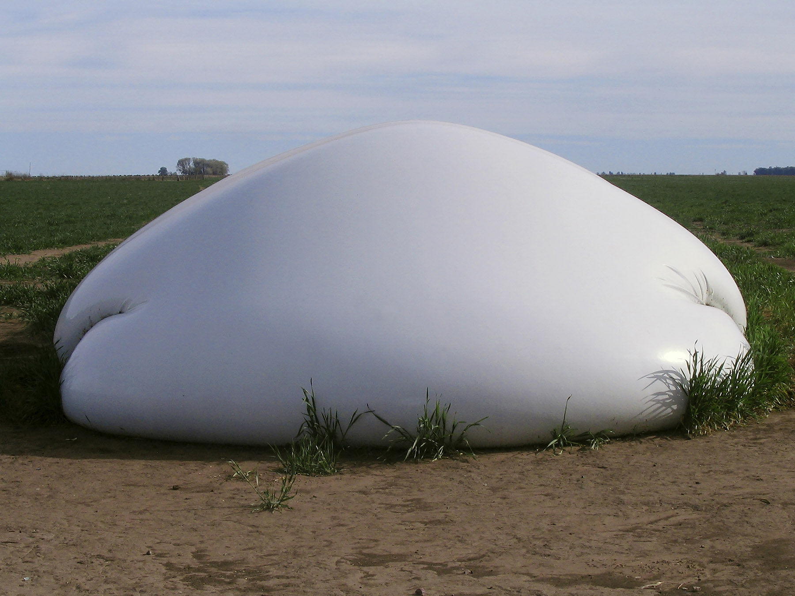

I am a design student and photographer specializing in detail and minimalist, industrial aesthetics. My objective is to produce visual works that are both captivating and impactful, employing minimalism to emphasize the essence of each project. I am looking to further my career as a digital designer in an environement where creativity technology, and innovation intersect to deliver outstanding results.
Soy estudiante de diseño y fotógrafa especializada en el detalle y la estética industrial minimalista. Mi objetivo es producir obras visuales que sean a la vez cautivadoras e impactantes, empleando el minimalismo para enfatizar la esencia de cada proyecto. Busco avanzar en mi carrera como diseñador digital en un entorno donde la creatividad, la tecnología y la innovación se cruzan para ofrecer resultados sobresalientes.
